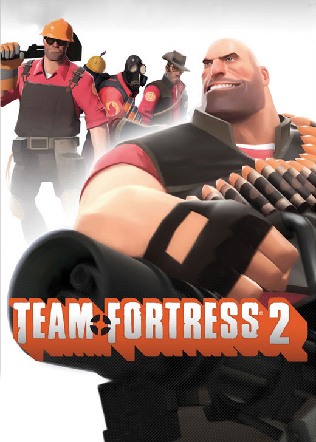
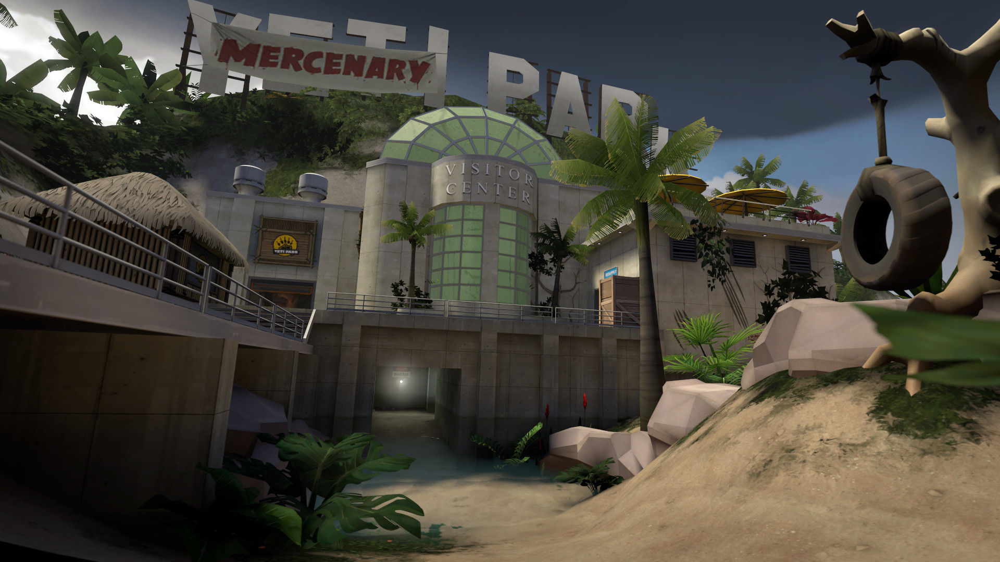
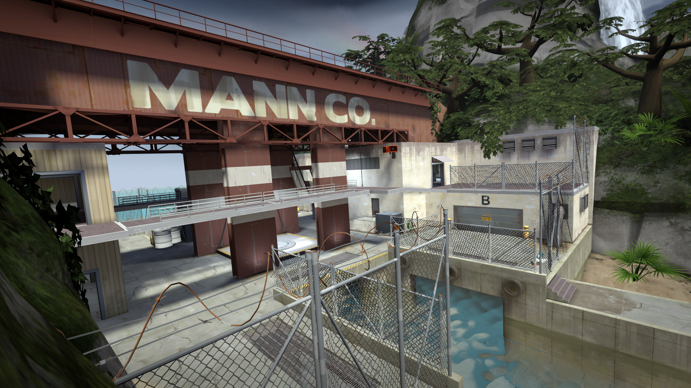
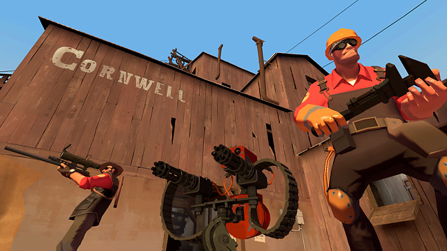
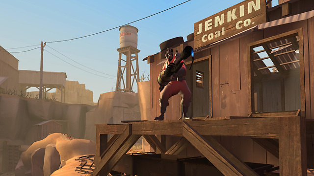
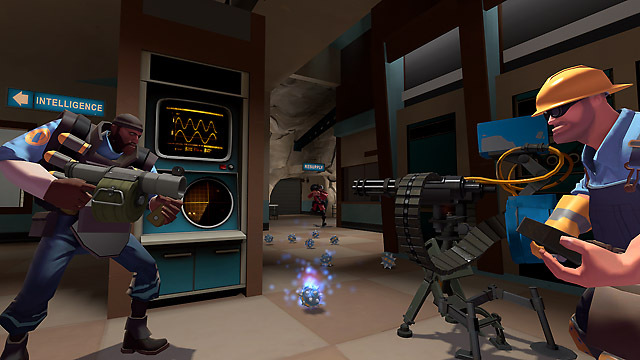
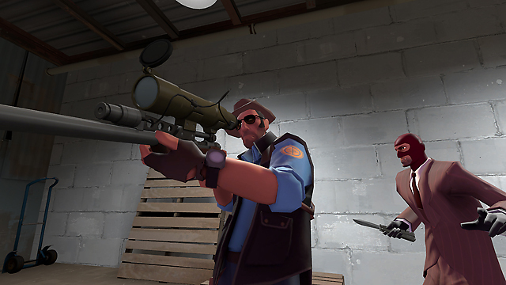
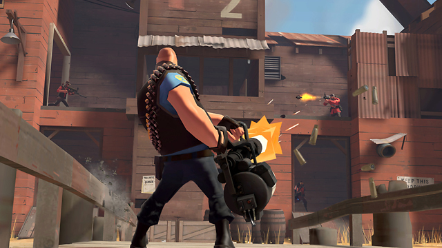
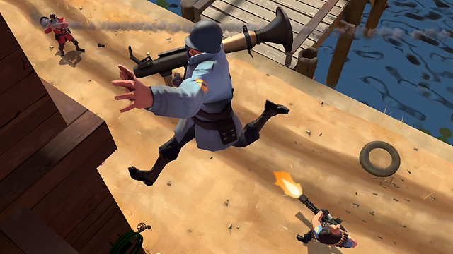

Дата выхода: 2007
Жанр: Экшен
Разработчик: Valve
Издательство: Valve
Платформа: PC
Тип издания: Лицензия (Free-to-Play)
Язык интерфейса: Русский
Язык озвучки: Русский
Операционная система: Windows 7, Windows Vista, Windows XP
Процессор: 1.7 ГГц
Оперативная память: 512 МБ
Видеокарта: 64 МБ, совместимость с DirectX 8.1
DirectX: Версия 8.1
Свободное место на жестком диске: 15 ГБ
Звуковая карта: Совместимая с DirectX
Описание игры
TF2 — это командный классовый шутер от первого лица, где игроки выбирают одного из девяти уникальных классов и сражаются в раундах на разнообразных картах. Цель каждой стороны — выполнить задание в зависимости от режима: захватить флаг, удержать контрольные точки, доставить вагонетку с бомбой или защитить свою базу. Игроки используют уникальное оружие и способности своего класса, комбинируют ультимейты, взаимодействуют с медиком для лечения и усиливают команду тактическими приёмами. TF2 славится мультяшной графикой, огромным арсеналом лута, юмором и отсутствием геймплейного доната.
Трейлер игры:
Скриншоты игры:







